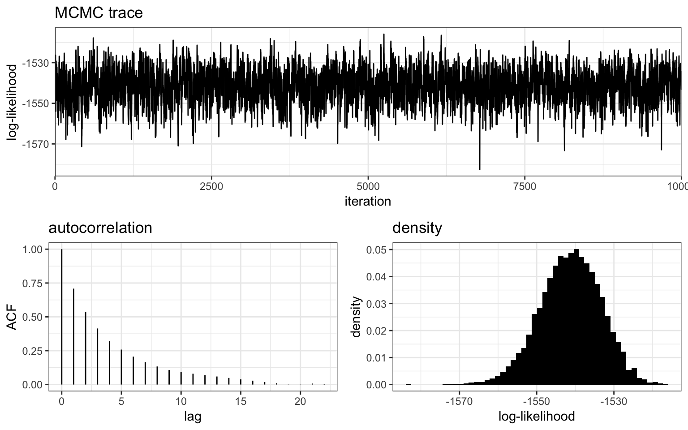
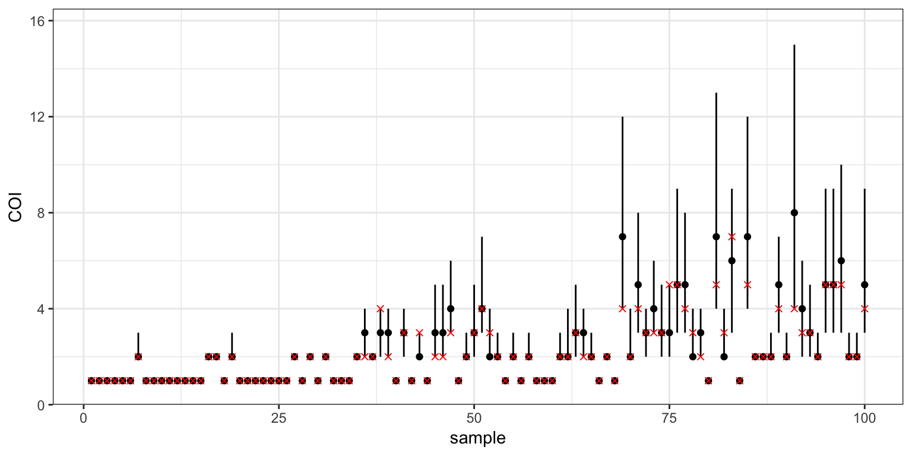
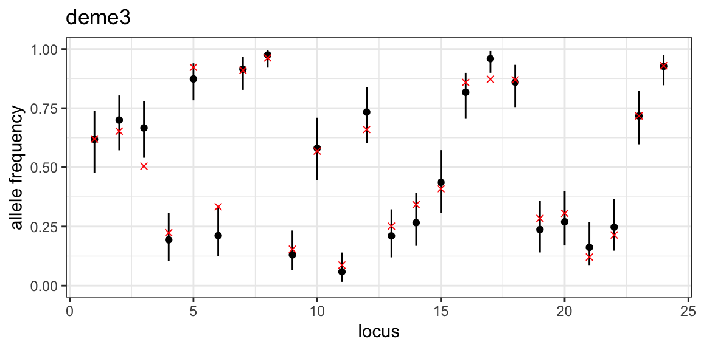
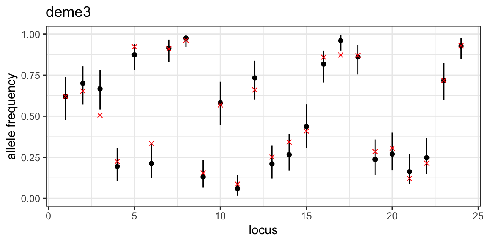

Bi-allelic data
Bob Verity
2019-02-26
tutorial-biallelic.RmdThis vignette demonstrates a very basic MALECOT analysis for bi-allelic data, i.e. data for which there are two alleles at every locus. It covers:
- Simulating/loading data into R
- Creating a project and binding data to the project
- Defining a simple parameter set
- Running the MCMC
- Checking MCMC behaviour
- Plotting results
Simulate some data
MALECOT comes with built-in functions for simulating data from different models. The models used in simulation are exactly the same as the models used in the inference step, allowing us to test the power of the program to arrive at the correct answer. We will simulate a data set of 100 samples, each genotyped at 24 loci and originating from 3 distinct subpopulations or demes. We will assume that the mean complexity of infection (COI) in these three subpopulation varies from 1.2 to 3:
Running names(mysim) we can see that the simulated data contains several elements:
names(mysim)## [1] "data" "n" "L" "true_group" "true_m"
## [6] "true_p" "call"The actual data that we are interested in is stored in the “data” element, but notice that we also have a record of the allele frequencies (“true_p”), the complexity of infection (“true_m”) and the grouping (“true_group”) that were used in generating these data. These additional records can be useful in ground-truthing our estimated values later on, but are not actually used by the program - all that is needed for MALECOT analysis is the “data” element.
Running head(mysim$data) we can see the general format required by MALECOT:
head(mysim$data)## sample_ID pop locus1 locus2 locus3 locus4 locus5 locus6 locus7 locus8
## 1 samp001 1 0 0 0 0 1 1 0 0
## 2 samp002 1 0 1 0 1 0 1 0 1
## 3 samp003 1 0 1 1 1 0 1 0 1
## 4 samp004 1 0 1 0 0 1 1 0 0
## 5 samp005 1 0 1 0 0 1 1 0 0
## 6 samp006 1 0 1 1 0 0 1 1 1
## locus9 locus10 locus11 locus12 locus13 locus14 locus15 locus16 locus17
## 1 0 0 1 0 0 0 1 0 0
## 2 0 1 1 0 0 1 1 1 1
## 3 0 0 0 0 1 0 1 0 1
## 4 1 0 1 0 0 0 1 1 1
## 5 1 0 0 1 0 0 0 1 1
## 6 0 0 1 1 0 0 1 0 1
## locus18 locus19 locus20 locus21 locus22 locus23 locus24
## 1 1 0 1 0 0 1 0
## 2 0 1 1 1 1 1 0
## 3 1 0 1 0 1 1 1
## 4 0 1 1 1 0 1 0
## 5 1 1 1 1 1 0 1
## 6 1 0 0 0 0 1 0Note that this is the required format for bi-allelic data only - multi-allelic data is dealt with in another vignette.
Data must be in the form of a dataframe, with samples in rows and loci in columns. When using real data, functions such as read.csv() and read.table() can be used to import data in dataframe format. There are also several meta-data columns in the example above, including the sample ID and the population of origin. These meta-data columns are optional and can be turned on or off when loading the data into a project.
The actual genetic data must be one of the following values
- 1 = homozygote for the reference allele (REF)
- 0 = homozygote for the alternative allele (ALT)
- 0.5 = heterozygote (both REF and ALT alleles observed)
- -9 = missing data. This value can be specified, but -9 is the default
MALECOT currently does not use within-sample allele frequency data, for example the raw read depth of REF vs. ALT alleles, and hence read depths should be converted to homozygote/heterozygote calls prior to analysis.
Create a project and read in data
MALCOT works with projects, which are essentially just simple lists containing all the inputs and outputs of a given analysis. We start by creating a project and loading in our data:
myproj <- malecot_project()
myproj <- bind_data_biallelic(myproj, mysim$data, ID_col = 1, pop_col = 2)Notice the general format of the bind_data() function, which takes the same project as both input and output. This is the format that most MALECOT functions will take, as it allows a function to modify the project before overwriting the original version. In the input arguments we have specified which columns are meta-data, and all other columns are assumed to contain genetic data unless otherwise specified.
We can view the project to check that the data have been loaded in correctly:
myproj## DATA:
## data format = biallelic
## samples = 100
## loci = 24
## pops = 3
## missing data = 0 of 2400 gene copies (0%)
##
## PARAMETER SETS:
## (none defined)If there have been mistakes in reading in the data, for example if meta-data columns have not been specified and so have been interpreted as genetic data (a common mistake), then this should be visible at this stage.
Define parameters and run basic MCMC
We can define different models by using different parameter sets. Our first parameter set will represent a simple model in which any COI between 1 and COI_max is equally likely a priori:
myproj <- new_set(myproj, name = "uniform model", COI_model = "uniform", COI_max = 20)Viewing the project we can now see additional properties, including the current active set and the parameters of this set:
myproj## DATA:
## data format = biallelic
## samples = 100
## loci = 24
## pops = 3
## missing data = 0 of 2400 gene copies (0%)
##
## PARAMETER SETS:
## * SET1: uniform model
##
## ACTIVE SET: SET1
## lambda = 1
## COI model = uniform
## COI max = 20
## estimate error = FALSE
## e1 = 0
## e2 = 0All analyses and plotting functions default to using the active set. We can change the active set using the function active_set(), or we can delete parameter sets with delete_set().
Now we are ready to run our first MCMC. We will start by exploring values of \(K\) from 1 to 5, using 10,000 burn-in iterations and 10,000 sampling iterations. The burn-in phase is required for the MCMC to “forget” its initial conditions and converge on the correct answer. By default the MCMC has auto_converge turned on, meaning it will test for convergence every convergence_test iterations and will exit if convergence is reached. Hence, it is generally a good idea to set burnin to a high value, as the MCMC will adjust this number down if needed. The number of sampling iterations can also be tuned. Our aim when choosing the number of sampling iterations should be to obtain enough samples that our posterior estimates are accurate to an acceptable tolerance level, but not so many that we waste time running the MCMC for long periods past this point. We will look into this parameter again once the MCMC has completed. Finally, for the sake of this document we will run with pb_markdown = TRUE to avoid printing large amounts of output, but you should omit this argument.
myproj <- run_mcmc(myproj, K = 1:5, burnin = 1e4, converge_test = 1e2,
samples = 1e4, pb_markdown = TRUE)## Running MCMC for K = 1
## Burn-in phase
##
|
|=================================================================| 100%
## converged within 200 iterations
## Sampling phase
##
|
|=================================================================| 100%
## completed in 0.819208 seconds
##
## Running MCMC for K = 2
## Burn-in phase
##
|
|=================================================================| 100%
## converged within 200 iterations
## Sampling phase
##
|
|=================================================================| 100%
## completed in 1.51399 seconds
##
## Running MCMC for K = 3
## Burn-in phase
##
|
|=================================================================| 100%
## converged within 200 iterations
## Sampling phase
##
|
|=================================================================| 100%
## completed in 2.03994 seconds
##
## Running MCMC for K = 4
## Burn-in phase
##
|
|=================================================================| 100%
## converged within 200 iterations
## Sampling phase
##
|
|=================================================================| 100%
## completed in 2.53585 seconds
##
## Running MCMC for K = 5
## Burn-in phase
##
|
|=================================================================| 100%
## converged within 200 iterations
## Sampling phase
##
|
|=================================================================| 100%
## completed in 3.00112 seconds
##
## Processing results## Total run-time: 11.76 secondsIf any values of \(K\) failed to converge then we could use the same run_mcmc() function to re-run the MCMC for just a single value of \(K\) and with different parameters (for example a longer burn-in). This will overwrite the existing output for the specified value of \(K\), but will leave all other values untouched:
Checking MCMC behaviour
Before diving into results, it is important to check that our MCMC has behaved as expected. There are many ways of checking MCMC performace, and here we will focus on only the most simple checks.
We can explore the estimated log-likelihood values through a series of diagnostic plots:
plot_loglike_dignostic(myproj, K = 3)
The top panel shows a “trace plot”" of the log-likelihood, in other words it shows the value of the log-likelihood at each sampling iteration of the MCMC, and the bottom right panel shows a histogram of these same values. We can see that the log-likelihood has fluctuated around a single stable value, and has bounced around freely enough to cover the same range of values many times over. This is exactly what we want to see - ideally a trace plot should look like a fuzzy black caterpillar! This indicates that the MCMC has probably explored the space well, although we can never rule out that there might be another “level” of log-likelihood that the MCMC has not found yet. This is one of the many paradoxes of MCMC - we can never be 100% sure that an MCMC has completely explored the space, we can only diagnose if it definitly hasn’t explored the space well. In other words, when looking at these plots we are looking for tell-tale signs of bad MCMC behaviour, such as jumping sporadically between levels or moving very slowly through a range of values.
The bottom left panel shows the level of autocorrelation in the trace plot for different degrees of separation between points (lags). When autocorrelation approaches zero it means that values are approximately independent - this occurs at around 20 lags here, meaning every 20th draw is approximately independent. The number of independent samples is therefore much smaller than the raw number of samples. We can use the get_ESS() function to get at exactly how many effectively independent samples we have:
get_ESS(myproj, K = 3)## rung1
## 1342.089It is worth keeping this value in mind when looking at trace plots so we are not fooled by large numbers of iterations. If our ESS is very small (tens to hundreds) then we are extremely unlikely to have explored the full model space, even if the raw number of sampling iterations is in the millions.
These checks should be carried out on each value of \(K\), and if any results show signs of poor MCMC behaviour then they should be repeated with larger sample sizes, or using other more sophisticated techniques to improve mixing.
Plot results
Structure plots
Usually the main result of interest from this sort of analysis is the posterior allocation or “structure” plot. This plot contains one bar for each sample, with the proportion of each colour giving the posterior probability of belonging to each of the \(K\) subpopulations. We can use the plot_structure() function to produce posterior allocation plots for different values of \(K\). The divide_ind_on argument adds white lines between individual samples, and can be turned off if these lines start getting in the way.
plot_structure(myproj, K = 2:5, divide_ind_on = TRUE)
The advantage of simulated data is that we know the true value of \(K\) used when generating the data (\(K = 3\) in this case) as well as which samples belong to which groups, meaning we can verify whether the model has arrived at the correct answer. In this example almost all samples are allocated correctly for \(K = 3\). The issue of deciding between different values of \(K\) is a big one, and will be dealt with in a later tutorial.
Posterior COI plots
Next we can plot the posterior COI of our samples. All plots produced by MALECOT are produced as ggplot objects, meaning they can be stored and modified later. For example, here we overlay the true (i.e. simulated) COIs on top of the posterior estimates:
# load ggplot2 package (which must be already installed)
library(ggplot2)
# store plot of posterior COIs as object
posterior_COI <- plot_COI(myproj, K = 3)
# overlay true COI values
posterior_COI <- posterior_COI + geom_point(aes(x = 1:100, y = mysim$true_m), col = "red", shape = 4)
posterior_COI
Comparing the posterior 95% credible intervals (black) with the true COIs (red), we can see that the model has mostly done a good job of estimating COIs. Estimates are fairly precise when the COI is very low (1 or 2), but they become very imprecise when COI is large. The model has also picked up the general trend in the simulated data, being lowest in the first subpopulation and highest in the last, but unfortunately it has systematically overestimated the COI across the board - this can be seen by the fact that most red crosses are in the lower half of the credible intervals. This is down to our choice of uniform prior on COI, which gives equal weight to any COI from 1 to 20. In reality (and in this simulated data) most COIs will tend to be clustered around small values, and so the uniform prior gives too much flexibility. We will address this issue, along with some other weaknesses of the model, in the next tutorial.
Posterior allele frequency plots
The third parameter of interest is the posterior allele frequency at each locus and in each subpopulation. Again, we have a record of the true values so we can check that the model output matches these values.
Before doing so, however, we need to revisit structure plots. One thing to note when looking at structure plots is that the group labelling is arbitrary, and labels can be swapped around without undermining results. For example, we could swap around what we call group1 and group2 in the structure plots above and the overall estimated structure would be the same. In fact, the group labels used in MALECOT are simply chosen to minimise the visual differences between plots - for example, in the structure plots above the colours are chosen to align most closely between different values of \(K\).
However, when comparing true allele frequencies against MCMC output we need to make sure our labels match up. We can do this using the get_group_order() function, which takes a project and value of \(K\) as input, along with a “target group”. The target group will be matched against the MCMC output and re-ordered as needed to get the best possible matching. For example, using mysim$true_group as the target group we obtain:
group_order_k3 <- get_group_order(myproj, K = 3, target_group = mysim$true_group)
group_order_k3## [1] 3 1 2This tells us that group 3 in our simulated data matches the first group in the MCMC output, group 1 matches the second group in the MCMC output, and group 2 matches the third group in the MCMC output. Now that we know this, we can plot posterior allele frequencies in each subpopulation and overlay the correct corresponding values from the simulated data. Note that when ggplot objects are produced inside a loop we have to use the print() function to make them appear on the screen:
# loop through subpopulations
for (i in 1:3) {
# produce plot of posterior allele frequencies for this subpopulation
posterior_p <- plot_p(myproj, K = 3, deme = i)
# get true simulated allele frequencies for this subpopulation
sim_p <- mapply(function(x){x[group_order_k3[i],1]}, mysim$true_p)
# overlay true allele frequencies onto plot
posterior_p <- posterior_p + geom_point(aes(x = 1:24, y = sim_p), col = "red", shape = 4)
print(posterior_p)
}
 

We can see that the MCMC has done a good job of estimating allele frequencies in all three subpopulations. This was made easier by the fact that allele frequencies are quite evenly distributed between 0 and 1, which is rarely the case in real data.
In the next tutorial we will look at ways of adding realism to the model through more complex priors.